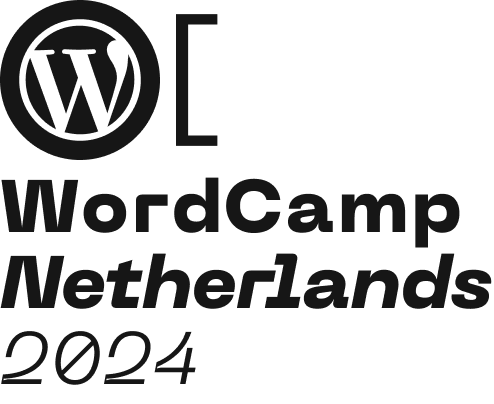

Data Liberation with WordPress Playground

Alex Kirk
- Born and raised in Vienna, Austria
- At Automattic (runs WordPress.com & more) since 2014
- Developer, leading teams working on Localization, Playground, Data Liberation, and previously, Matrix
- Contributing to WordPress.org in Meta and Polyglots
- WordPress plugins as sideprojects
Trying WordPress Plugins is risky for your site!
WordPress is server-side only software!
I don't need data liberation!
Data exports from platforms are useless!
Agenda
- What is Data Liberation?
- Big Detour: WordPress Playground
- Try WordPress browser extension
At the end of this talk
you'll know
- how to use Playground for experiments
- how typical challenges of data liberation can be overcome
Liberated = Free Data
- Unlocked
- Widely supported (file) format
- Transformable into other formats